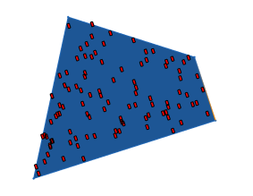
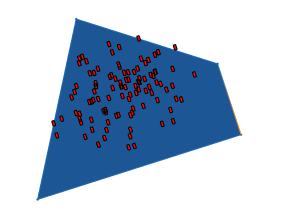
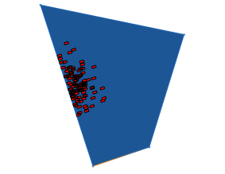

scatter operation
Synopsis
scatter(domain, nPoints, distributionType) { operations }
scatter(domain, nPoints, gaussian, scatterMean, scatterStddev) { operations }
Parameters
- domain (selstr)
Where to distribute the points. One of (surface|volume|scope). Note that volume only works if applied to a closed surface geometry; id the mesh is not closed, the operation falls back to surface. - nPoints (float)
The number of points to distribute. - distributionType (selstr)
The random distribution type. Valid types are (uniform|gaussian). - scatterMean (selstr)
The position in the scope to use as the mean for the gaussian normal distribution. One of (center|front|back|left|right|top|bottom). Default value is center. - scatterStddev (float)
The standard deviation for the gaussian normal distribution. Note that this parameter can also be given in relative coordinates (leading to axisspecific standard deviations according to the dimensions of the scope). Default value is '0.16.
The scatter operation places point shapes in or on the geometry of the current shape.
The parameter nPoints determines how many point shapes shape are created. The first parameter domain chooses where to distribute the points. Two different random distributions can be used (uniform or gaussian; the optional parameter mean describes the center position of the point cluster relative to the current shape. It currently can be either
center (default), front, back, left, right, top, or bottom. The optional parameter deviation describes the standard deviation. Note that this
parameter can also be given in relative coordinates (leading to axisspecific standard deviations according to the dimensions of the scope).
Per default the value of deviation is set to '0.16.
The scatter operation does not affect the rotation of the children shapes except if the domain is set to surface. Then the the children's scopes are oriented such that the y-direction corresponds to the surface normal.
Note: the children shape's scope sizes are set to 0.
Note: the children shape's geometry only contains one vertex, you probably want ti insert a geometry using the i() operation.
Examples
Point Distribution on a Surface
 |
Init-->
scatter(surface, 100, uniform) { Leaf }
Leaf-->
primitiveCube()
s(0.2,0.3,0.1)
color("#ff0000")
Uniform point distribution on a surface.
|
 |
Init-->
scatter(surface, 100, gaussian) { Leaf }
Leaf-->
primitiveCube()
s(0.2,0.3,0.1)
color("#ff0000")
Gaussian normal point distribution on a surface.
|
 |
Init-->
scatter(surface, 100, gaussian, left, '0.1) { Leaf }
Leaf-->
primitiveCube()
s(0.2,0.3,0.1)
color("#ff0000")
Gaussian normal point distribution agan; the mean of the distribution is moved to the scope's left side and a smaller standard deviation is used.
|
Copyright ©2008-2018 Esri R&D Center Zurich. All rights reserved.